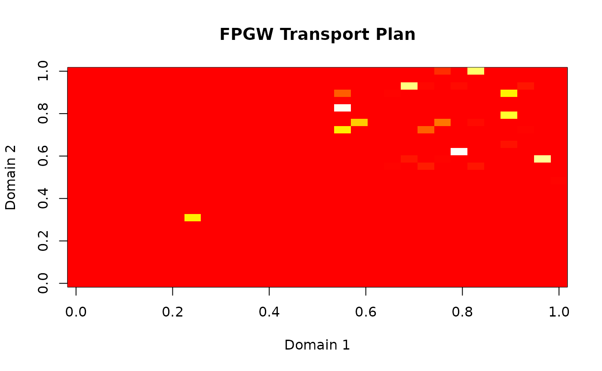

Fused-Partial Gromov-Wasserstein for Domain Alignment
Source:vignettes/fpgw_tutorial.Rmd
fpgw_tutorial.RmdIntroduction
The Fused-Partial Gromov-Wasserstein (FPGW) distance is a powerful tool for aligning domains with:
- Different feature spaces (heterogeneous domains)
- Partial correspondence (not all samples need to match)
- Combined attribute and structural information
This vignette demonstrates how to use FPGW for various domain alignment tasks.
Basic Usage
Classical Fused Gromov-Wasserstein
The simplest case aligns two domains using both feature and structural information:
# Create synthetic data with different dimensions
set.seed(123)
n1 <- 30
n2 <- 30
# Domain 1: 3D data
X1 <- matrix(rnorm(n1 * 3), n1, 3)
X1[1:15, ] <- X1[1:15, ] + 2 # Create two clusters
# Domain 2: 5D data with similar structure
X2 <- matrix(rnorm(n2 * 5), n2, 5)
X2[1:15, ] <- X2[1:15, ] + 2
# Create hyperdesign object
design1 <- data.frame(id = 1:n1, cluster = rep(1:2, each = 15))
design2 <- data.frame(id = 1:n2, cluster = rep(1:2, each = 15))
md1 <- multidesign(X1, design1)
md2 <- multidesign(X2, design2)
hd <- hyperdesign(list(domain1 = md1, domain2 = md2))
# Compute FPGW alignment
result <- fpgw(hd, omega1 = 0.5, verbose = TRUE)
#> FPGW: Computing distance between domain 1 and 2
#> Iteration 10: FW gap = 9.746e-01, alpha = 0.000
#> Iteration 20: FW gap = 9.746e-01, alpha = 0.000
#> Iteration 30: FW gap = 9.746e-01, alpha = 0.000
#> Iteration 40: FW gap = 9.746e-01, alpha = 0.000
#> Iteration 50: FW gap = 9.746e-01, alpha = 0.000
#> Iteration 60: FW gap = 9.746e-01, alpha = 0.000
#> Iteration 70: FW gap = 9.746e-01, alpha = 0.000
#> Iteration 80: FW gap = 9.746e-01, alpha = 0.000
#> Iteration 90: FW gap = 9.746e-01, alpha = 0.000
#> Iteration 100: FW gap = 9.746e-01, alpha = 0.000
#> Iteration 110: FW gap = 9.746e-01, alpha = 0.000
#> Iteration 120: FW gap = 9.746e-01, alpha = 0.000
#> Iteration 130: FW gap = 9.746e-01, alpha = 0.000
#> Iteration 140: FW gap = 9.746e-01, alpha = 0.000
#> Iteration 150: FW gap = 9.746e-01, alpha = 0.000
#> Iteration 160: FW gap = 9.746e-01, alpha = 0.000
#> Iteration 170: FW gap = 9.746e-01, alpha = 0.000
#> Iteration 180: FW gap = 9.746e-01, alpha = 0.000
#> Iteration 190: FW gap = 9.746e-01, alpha = 0.000
#> Iteration 200: FW gap = 9.746e-01, alpha = 0.000
print(result)
#> Fused-Partial Gromov-Wasserstein
#> ================================
#> Number of domains: 2
#> Domain names: domain1, domain2
#> Feature weight (omega1): 0.5
#> Mode: Classical Fused GW
#>
#> Pairwise distances:
#> [,1] [,2]
#> [1,] 0.0000 0.4898
#> [2,] 0.4898 0.0000
#>
#> Warning: Some optimizations did not converge
#> Non-converged pairs:
#> (domain1, domain2)Interpreting the Transport Plan
The transport plan shows how samples from one domain map to another:
# Extract transport plan
P <- result$transport_plans[[1]]
# Find strongest connections
threshold <- 0.05
strong_connections <- which(P > threshold, arr.ind = TRUE)
head(strong_connections)
#> row col
# Visualize transport plan
image(P, main = "FPGW Transport Plan",
xlab = "Domain 1", ylab = "Domain 2",
col = heat.colors(100))
Partial Transport Variants
Mass-Constrained FPGW
When domains have outliers or noise, you may want to transport only a fraction of the mass:
# Add outliers to domain 2
X2_noisy <- rbind(X2, matrix(rnorm(10 * 5, sd = 5), 10, 5))
design2_noisy <- data.frame(id = 1:(n2 + 10),
cluster = c(rep(1:2, each = 15), rep(3, 10)))
md2_noisy <- multidesign(X2_noisy, design2_noisy)
hd_noisy <- hyperdesign(list(domain1 = md1, domain2 = md2_noisy))
# Transport only 80% of mass to avoid outliers
result_partial <- fpgw(hd_noisy, omega1 = 0.5, rho = 0.8)
# Check transported mass
P_partial <- result_partial$transport_plans[[1]]
cat("Total transported mass:", sum(P_partial), "\n")
#> Total transported mass: 0.2564186Controlling Feature vs Structure Weight
The omega1 parameter controls the balance between
feature and structural alignment:
# Pure structural alignment (small omega1)
result_struct <- fpgw(hd, omega1 = 0.01)
# Balanced alignment
result_balanced <- fpgw(hd, omega1 = 0.5)
# Pure feature alignment (large omega1)
result_feature <- fpgw(hd, omega1 = 0.99)
# Compare distances
cat("Structural emphasis distance:", result_struct$distances[1,2], "\n")
#> Structural emphasis distance: 0.2036896
cat("Balanced distance:", result_balanced$distances[1,2], "\n")
#> Balanced distance: 0.4897807
cat("Feature emphasis distance:", result_feature$distances[1,2], "\n")
#> Feature emphasis distance: 0.001246166Multi-Domain Alignment
FPGW can align multiple domains simultaneously:
# Create three domains with varying dimensions
X3 <- matrix(rnorm(25 * 4), 25, 4)
X3[1:12, ] <- X3[1:12, ] + 2
design3 <- data.frame(id = 1:25, cluster = c(rep(1, 12), rep(2, 13)))
md3 <- multidesign(X3, design3)
# Create hyperdesign with three domains
hd_multi <- hyperdesign(list(
domain1 = md1,
domain2 = md2,
domain3 = md3
))
# Compute pairwise alignments
result_multi <- fpgw(hd_multi, omega1 = 0.3)
# Distance matrix between all domains
print(result_multi$distances)
#> [,1] [,2] [,3]
#> [1,] 0.0000000 0.6346543 0.6482231
#> [2,] 0.6346543 0.0000000 0.6902467
#> [3,] 0.6482231 0.6902467 0.0000000Performance Considerations
The FPGW implementation uses optimized C++ code for performance:
# Compare performance for different problem sizes
sizes <- c(20, 50, 100)
times <- numeric(length(sizes))
for (i in seq_along(sizes)) {
n <- sizes[i]
X1_test <- matrix(rnorm(n * 5), n, 5)
X2_test <- matrix(rnorm(n * 5), n, 5)
design_test <- data.frame(id = 1:n)
hd_test <- hyperdesign(list(
d1 = multidesign(X1_test, design_test),
d2 = multidesign(X2_test, design_test)
))
times[i] <- system.time({
fpgw(hd_test, omega1 = 0.5, max_iter = 10, verbose = FALSE)
})[3]
}
plot(sizes, times, type = "b",
xlab = "Problem size (n)", ylab = "Time (seconds)",
main = "FPGW Scaling Performance")Advanced Usage
Custom Distance Metrics
You can use different distance metrics for within-domain distances:
# Use Manhattan distance instead of Euclidean
result_manhattan <- fpgw(hd, omega1 = 0.5, metric = "manhattan")